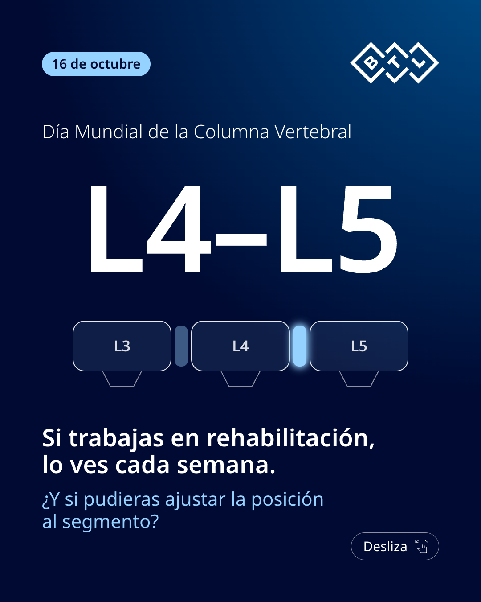
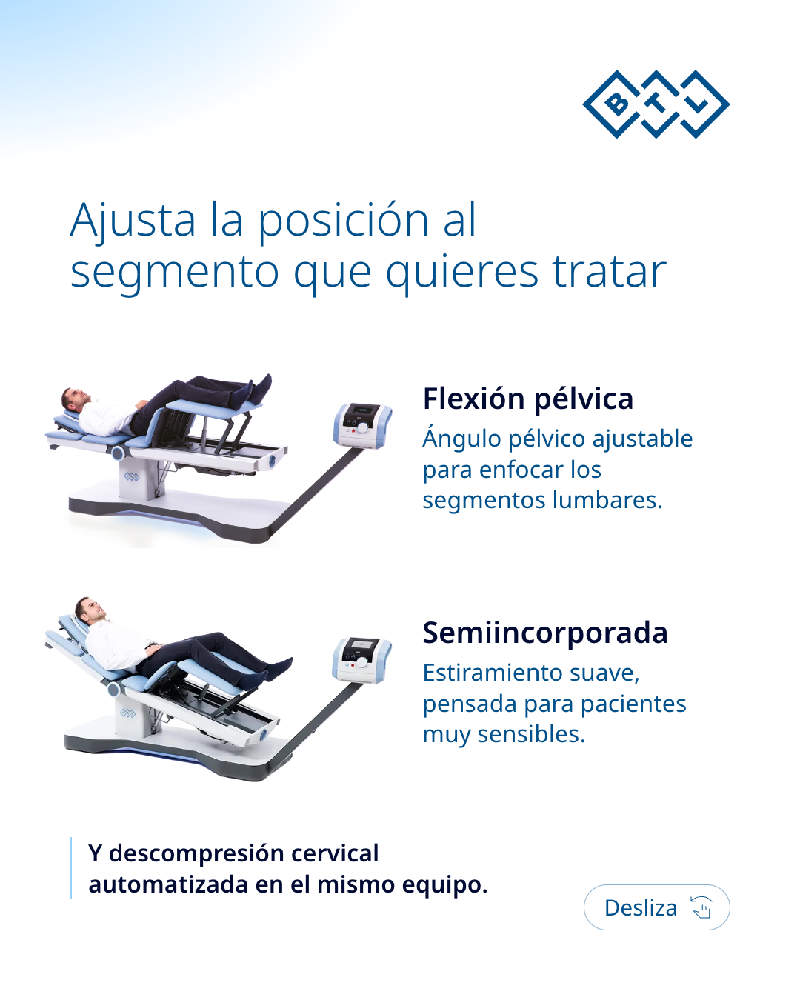
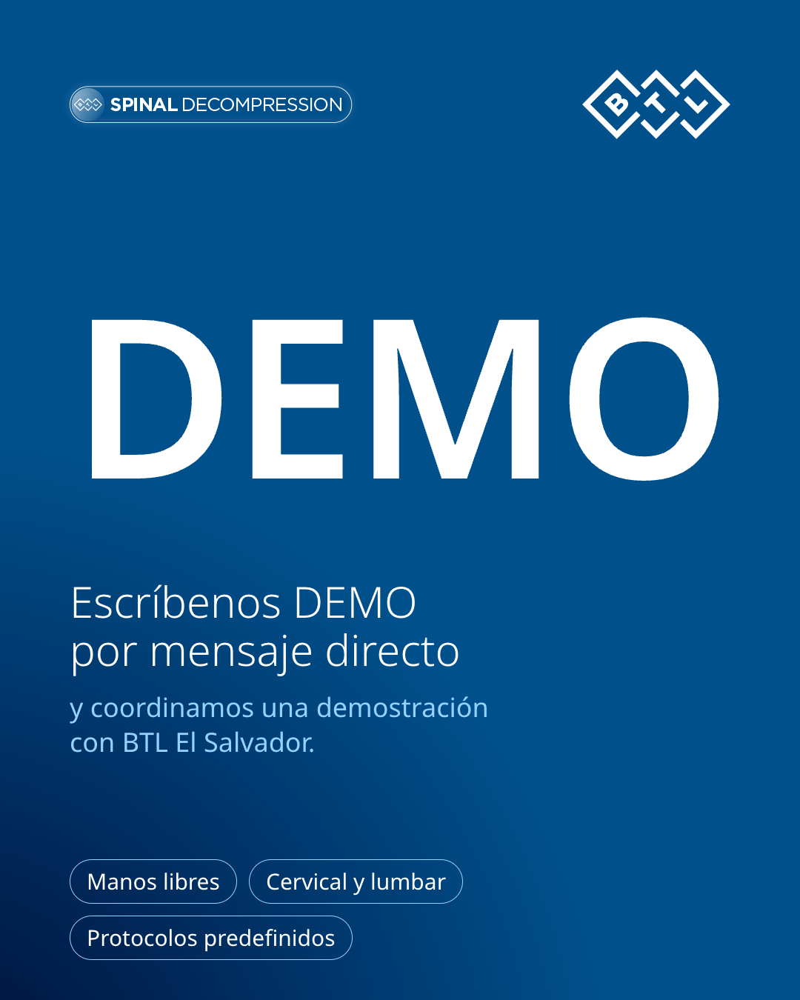

Opción C · El segmento



L4–L5. Si trabajas en rehabilitación, lo ves cada semana. Este 16 de octubre, Día Mundial de la Columna Vertebral, te mostramos cómo BTL Spinal Decompression te permite ajustar la posición del paciente al segmento que quieres tratar, con descompresión cervical y lumbar en el mismo equipo. Escríbenos DEMO por mensaje directo y coordinamos una demostración con BTL El Salvador. #DíaMundialDeLaColumna #DescompresiónVertebral #Fisioterapia #ElSalvador